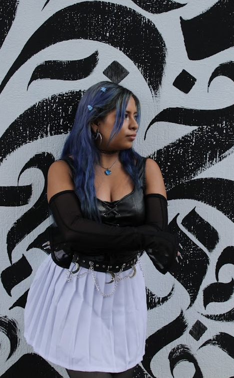

Sobre mi
Yo soy Mich, me encanta el color azul y me gusta aprender siempre cosas nuevas, mi familia es mi adoración (mis papás, mi hermanita y mi perrhija).
Soy una persona muy leal y con buenos principios y un corazón de pollo, espero algún día llegar a ser como la increíble mujer que fue mi abuelita (besos hasta donde quiera que estés abue.)
Soy una diseñadora gráfica
entusiasta y creativa, me gusta superarme en cada trabajo y
aportar grandes ideas que lo hagan más eficaz.
Sé trabajar bajo presión y
liderar para poder llevar a cabo
excelentes resultados.
me gusta estar preparada y
aprender, por lo tanto me veo haciendo una maestría especializada en animación digital.
